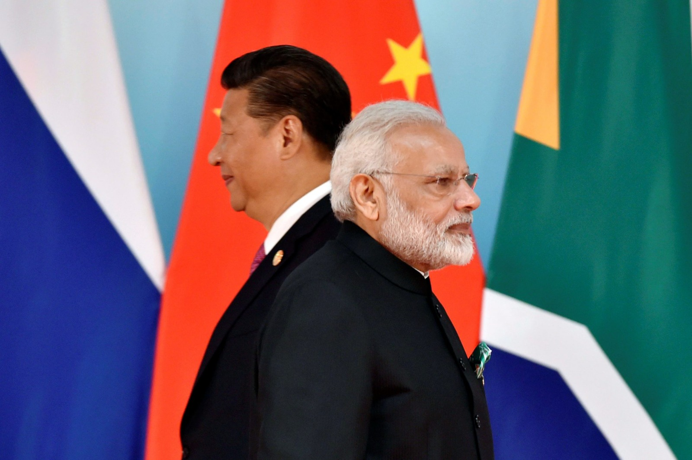

China's Petty Geopolitical Move Blocks India's Attempt to Ban 26/11 LeT Terrorist

An interesting story
In November 2008, Mumbai, India was targeted in one of the deadliest terrorist attacks in history, which lasted for three consecutive days. The attack was carried out by the Pakistan-based Lashkar-e-Taiba (LeT) terrorist group, which killed over 160 people, including 26 foreign nationals, and injured hundreds more. Since then, India has been trying to get the mastermind behind the attack, Hafiz Saeed, banned by the international community.
Examples of geopolitical moves
However, China's geopolitical move has blocked India's attempt to ban Hafiz Saeed. China is proving to be a thorn in India's side by consistently blocking the efforts of India to get Hafiz Saeed, the LeT chief, banned by the United Nations (UN). In addition to that, China is making serious efforts to build up relationships with Pakistan, India's arch-rival nation. China's recent veto, which blocked India's move to ban Hafiz Saeed in the United Nations, is not just a petty geopolitical move but also a signal showing China's intention to change the global balance to its favor. Although the accused Hafiz Saeed is listed as a terrorist designated by the UN, China has been standing with LeT.
Case studies
Additionally, China is making efforts to develop the China-Pakistan Economic Corridor (CPEC) project, which runs through Pakistan-administered Kashmir, a region which is claimed by India. The CPEC project makes India's attempt to fight terrorism in the region more difficult, as it provides significant funding for Pakistan, which can then be utilized for funding the terrorism in the region. Moreover, China has blocked India's entry into the Nuclear Suppliers Group (NSG). The NSG is a group of countries that work together to prevent the proliferation of nuclear weapons by sharing their technology only with countries that meet certain criteria. India wants to be a part of the NSG, but China is blocking its entry into the group, citing India's non-signature of the Non-Proliferation Treaty (NPT), which China itself is a part of.
Conclusion in three points
In conclusion, China's petty geopolitical move to block India's attempt to ban 26/11 LeT terrorist has deeper implications:
- It shows China's intention to change the global balance to its favor.
- It undermines India's ability to fight terrorism in the region.
- It negatively affects the relationship between the two nations.
References
Hashtags
- #ChinaBlocksIndia
- #GeopoliticalMoves
- #IndiaFightsTerrorism
- #CPEC
SEO Keywords
- India
- China
- terrorism
- geopolitical move
- CPEC
- Nuclear Suppliers Group
Article Category
Politics/International Relations/Terrorism/Geopolitics.
Curated by Team Akash.Mittal.Blog
Curated by Team Akash.Mittal.Blog
Share on Twitter Share on LinkedIn